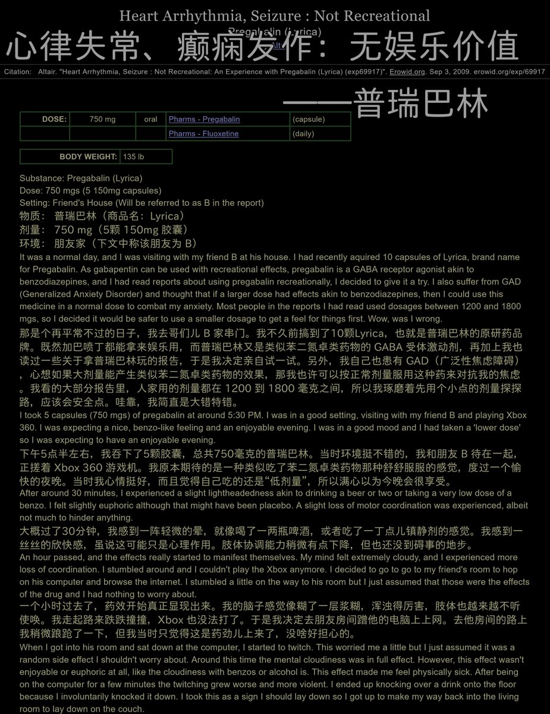
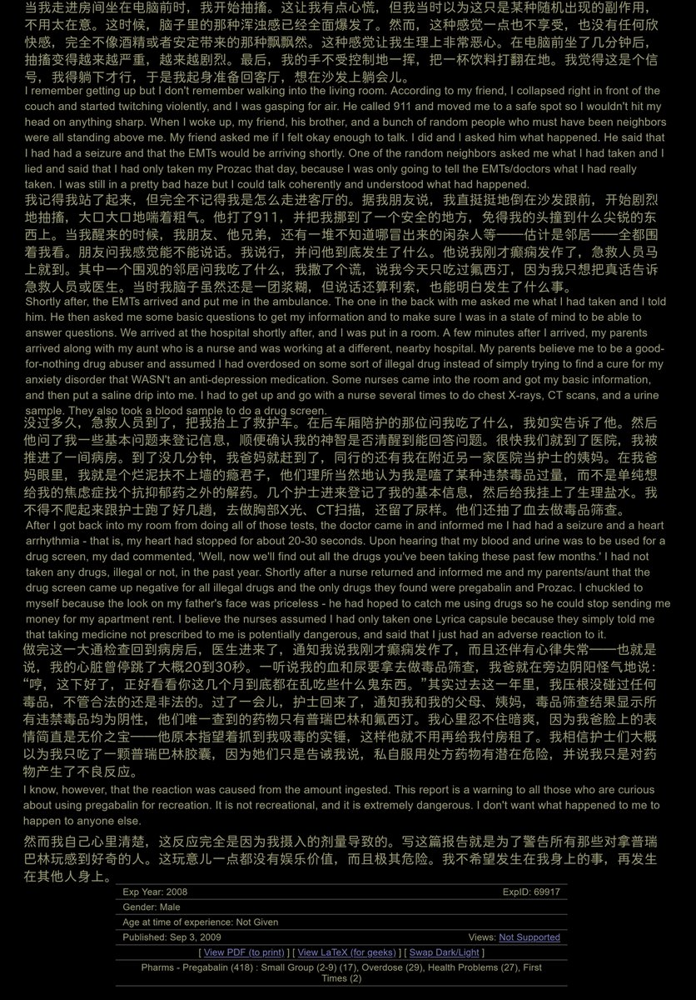

一奈🍥🧊🍔🍜💊
@ww123qwq
睡一觉就好了，去啥医院。癫痫加1t氯硝安定


鼠尾草～🌿
@SalviaSWC
药物报告连载之《心律失常、癫痫发作：无娱乐价值》
“我”之前从未服用过普瑞巴林，在服用仅仅750mg的普瑞巴林之后，就产生了恶劣反应，险些危及生命。
初次尝试某种药物时，千万补药大剂量地吃阿，慢慢来好嘛🥺
虽然关系不大，读到这个，窝又想起某人陪女友一起od普瑞，结果把人家送进ICU里的事了🥲 https://t.co/cexA1ve7HJ